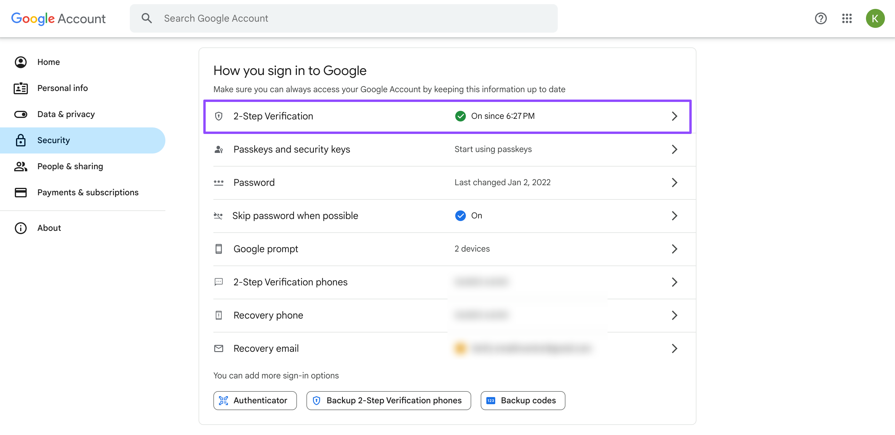
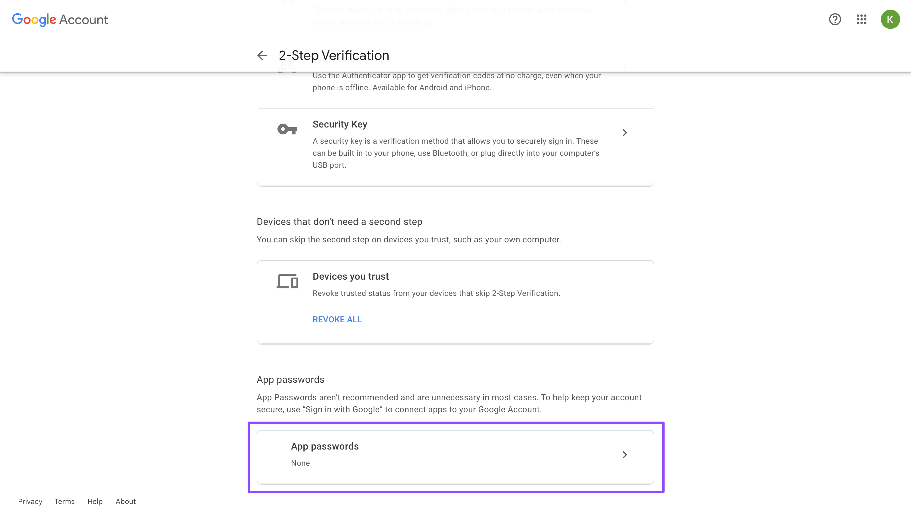
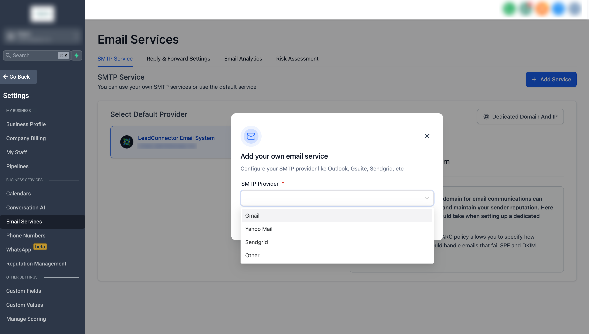
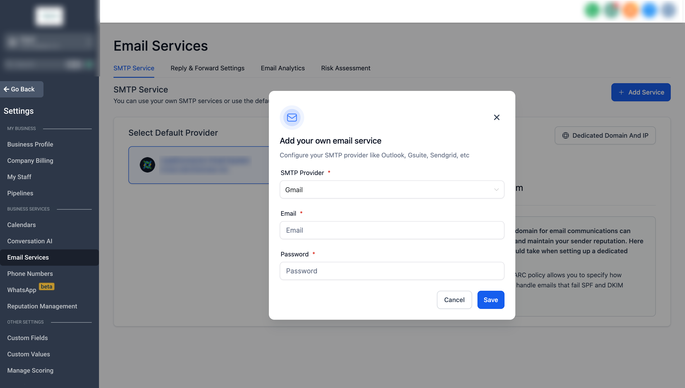

This comprehensive guide walks you through creating app-specific account passwords with 2-step verification, focusing on Gmail SMTP integration.
TABLE OF CONTENTS
- Create Gmail App Passwords
- Create Gmail SMTP settings
- FAQs
- Q: What is the benefit of using an app-specific password for Gmail SMTP integration?
- Q: What is the significance of 2-step verification in the context of Gmail SMTP integration?
- Q: Why is it recommended to use a VPN while connecting to Gmail SMTP users in the Philippines?
- Q: Can I use the same app-specific password for multiple applications?
- Q: What should I do if the 2-step verification option is not showing up on my Google account?
- Q: I have enabled 2-step verification and created an app-specific password, but my integration still isn't working. What can I do?
- Q: Can I still use my regular Gmail password once I've set up an app-specific password?
Create Gmail App Passwords
You can create the app password in the security settings of your Gmail account.
- Open Security page.
- Scroll down to How you sign in to Google section.
Note: Ensure that 2-Step Verification is enabled. If it is disabled, the option for app passwords will not be available.

- Click the 2-Step Verification option.
- On the next screen, scroll to the bottom of the page and click on App passwords.

In the App name field, type anything you prefer and click on Create.
Copy the generated app password. You will need to enter it in your email account settings as the next step.
Create Gmail SMTP settings
- Navigate to Settings -> Email Service -> SMTP Service.
- Click "Add Service" and Choose the Gmail.

- Then add your Gmail email address and App password. Save the settings.

FAQs
Q: What is the benefit of using an app-specific password for Gmail SMTP integration?
A: An app-specific password provides an additional layer of security and allows the app to access your Gmail account without you needing to input your password each time.
Q: What is the significance of 2-step verification in the context of Gmail SMTP integration?
A: 2-step verification provides extra security to your account. When you set up an app-specific password, Google requires that you have 2-step verification enabled to ensure your account is protected.
Q: Why is it recommended to use a VPN while connecting to Gmail SMTP users in the Philippines?
A: A VPN can help bypass regional restrictions and add an extra layer of security when connecting to Gmail SMTP. It might be particularly beneficial for users in certain regions like the Philippines.
Q: Can I use the same app-specific password for multiple applications?
A: No, Google recommends creating a unique app-specific password for each application to enhance your account's security.
Q: What should I do if the 2-step verification option is not showing up on my Google account?
A: If the 2-step verification option is not appearing, it could mean the feature is turned off in your Google Admin settings. You would need to contact your Google Workspace admin to enable the option.
Q: I have enabled 2-step verification and created an app-specific password, but my integration still isn't working. What can I do?
A: Ensure you have entered the app-specific password correctly during integration. If you're still having issues, it's best to contact Gmail support.
Q: Can I still use my regular Gmail password once I've set up an app-specific password?
A: Yes, you can. An app-specific password does not replace your regular password but is used for specific apps to access your Gmail account.